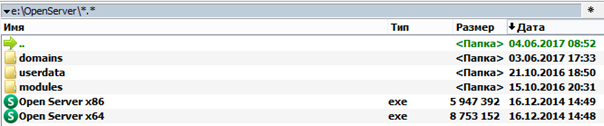
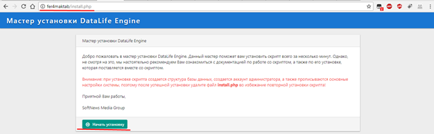
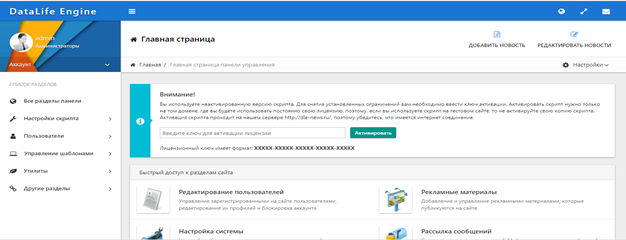
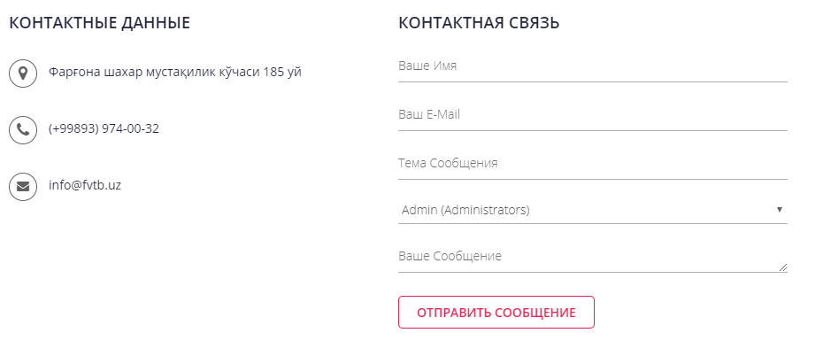

프로젝트 개요
DataLife Engine(DLE)은 주로 뉴스 포털과 블로그용으로 설계된 다기능 콘텐츠 관리 시스템입니다. PHP와 MySQL을 사용하여 개발되었으므로 콘텐츠가 많은 웹사이트를 쉽게 관리할 수 있는 강력한 솔루션입니다.
DLE의 주요 기능:
- MySQL 데이터베이스 지원: 효율적인 데이터 저장 및 검색.
- AJAX 기술: 페이지 새로고침을 줄여 사용자 경험을 향상합니다.
- 고급 보안 시스템: 일반적인 웹 취약점으로부터 보호합니다.
- 유연한 템플릿 시스템: 독립적인 디자인과 레이아웃 맞춤설정이 가능합니다.
- SEO 친화적: 더 나은 검색 엔진 색인 생성을 위해 CNC(사람이 읽을 수 있는 URL)를 지원합니다.
- 사용자 관리: 사용자 등록, 역할 및 권한에 대한 광범위한 기능.
- 콘텐츠 관리: 뉴스와 기사를 쉽게 생성, 편집 및 게시할 수 있습니다.
- RSS 지원: 뉴스 피드 가져오기 및 내보내기.
- 배너 관리: 광고 게재위치 및 배너를 제어합니다.
설치 지침
전제조건
- 오픈 서버: 로컬 서버 환경을 실행하기 위해 필요합니다.
- DataLife 엔진: 핵심 CMS 파일.
설치 단계
- Open Server 다운로드 및 설치:
- 서버 열기를 방문하여 설치 프로그램을 다운로드하세요.
- 원하는 디스크에 Open Server를 설치하세요.
- 프로젝트 디렉토리 설정:
- 디스크의
서버 열기모스크바로 이동하세요. domains폴더 내에fer4maktab이라는 새로운 항목을 적용합니다.- DLE 데모에서 DataLife 엔진 파일을 다운로드하세요.
- DLE 파일을
fer4maktab라이브러리에 추출합니다.
- 디스크의
- 오픈 서버 시작:
- 시스템 아키텍처에 따라
Open Server x64또는Open Server x86을 실행하세요. - 오픈 서버 인터페이스에서
zapustitь버튼을 클릭하여 서버를 시작하세요.
- 시스템 아키텍처에 따라
- DLE 구성:
- 웹 브라우저를 열고
http://127.0.0.1/openserver/phpmyadmin/index.php로 이동합니다. - 프로젝트에 대한 새 MySQL 데이터베이스를 만듭니다.
http://127.0.0.1/fer4maktab에 접속하여 설치 마법사를 따르세요.- 메시지가 나타나면 데이터베이스 자격 증명을 입력하세요.
- 웹 브라우저를 열고
- 설치 완료:
- 설치 마법사의 단계에 따라 설정을 완료하세요.
- 설치 중에 설정한 자격 증명을 사용하여 관리자 패널에 로그인합니다.
디렉터리 구조
fer4maktab/
├── admin.php
├── index.php
├── templates/
│ ├── default/
│ │ ├── main.tpl
│ │ ├── header.tpl
│ │ ├── footer.tpl
│ │ └── ...
│ └── ...
├── engine/
│ ├── classes/
│ ├── data/
│ ├── modules/
│ ├── ...
└── ...
프로젝트 사용법
관리자 패널
http://127.0.0.1/fer4maktab/admin.php에서 관리 패널에 액세스하세요. 콘텐츠, 사용자, 설정을 관리하려면 관리자 패널을 사용하세요. 직관적인 인터페이스에서 새 기사를 작성하고, 댓글을 관리하고, 사이트 설정을 구성하세요.
사용자 인터페이스
사용자는 등록, 로그인 및 웹사이트 활동에 참여할 수 있습니다. 기사에 댓글을 달고, 뉴스를 평가하고, 콘텐츠와 상호작용하세요. 웹사이트에서 직접 미디어 파일을 업로드하고 관리하세요.
추가 자료
결론
이 프로젝트는 DataLife Engine CMS를 사용하여 완전한 기능을 갖춘 뉴스 포털을 구축하는 방법을 보여줍니다. 여기에 제공된 문서는 DLE 기반 웹사이트를 효율적으로 설정하고 관리하는 데 도움이 됩니다. 질문이 있거나 추가 지원이 필요한 경우 공식 문서를 참조하거나 프로젝트 관리자에게 문의하세요.
라이센스
이 프로젝트는 MIT 라이선스에 따라 라이선스가 부여됩니다. 자세한 내용은 LICENSE.md 파일을 참조하세요.
이미지
다음은 프로젝트 설정 및 사용법을 보여주는 스크린샷입니다.



서버 아이콘 열기
서버 자동 로드 아이콘 열기
오픈 서버 인터페이스
Datalife 엔진 설치 시작
라이센스 계약
MySQL 서버 액세스 데이터
웹사이트 관리자 패널
웹사이트 홈페이지
웹사이트 연락처 페이지